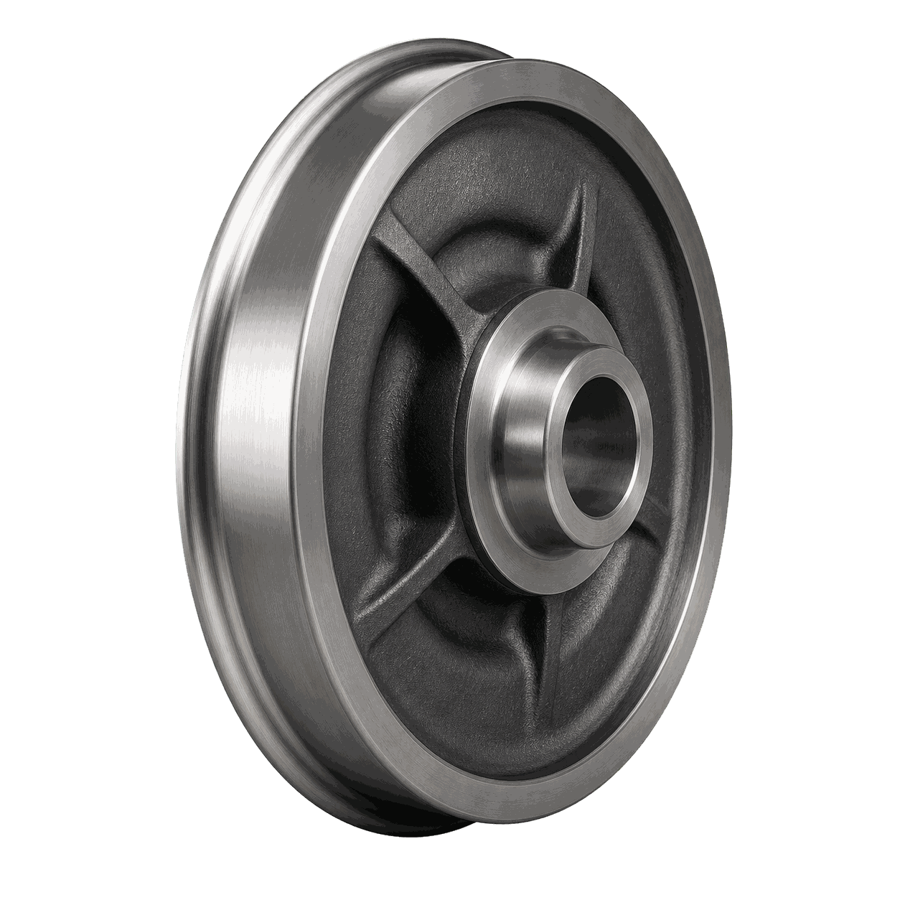
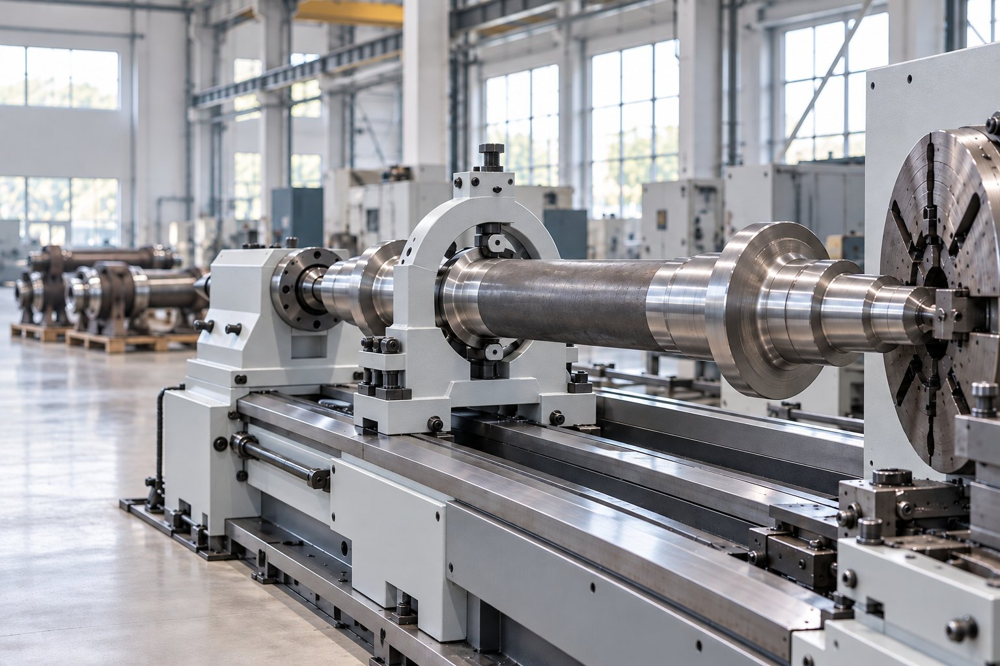
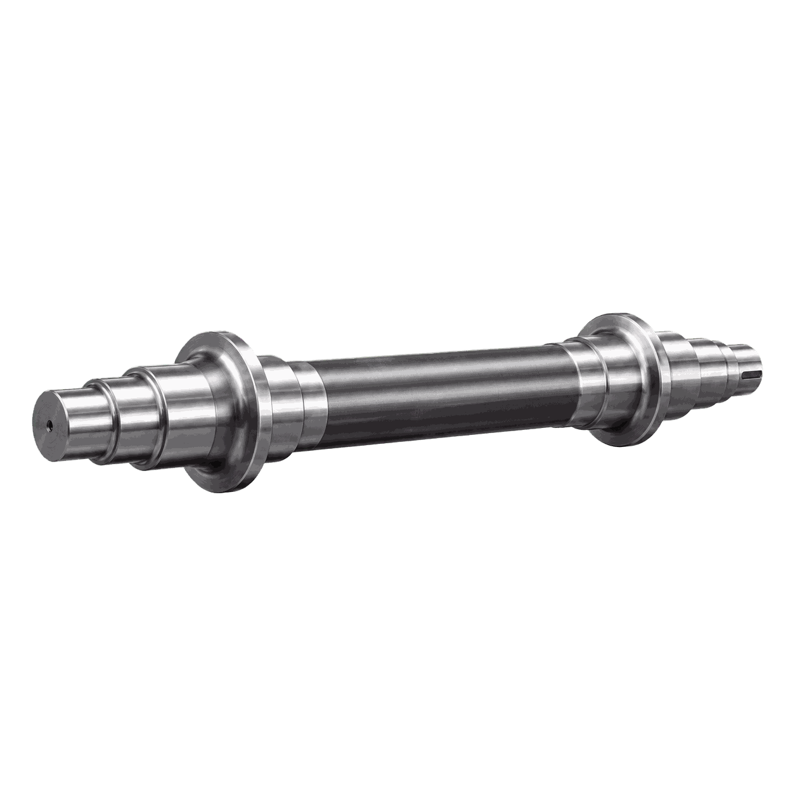
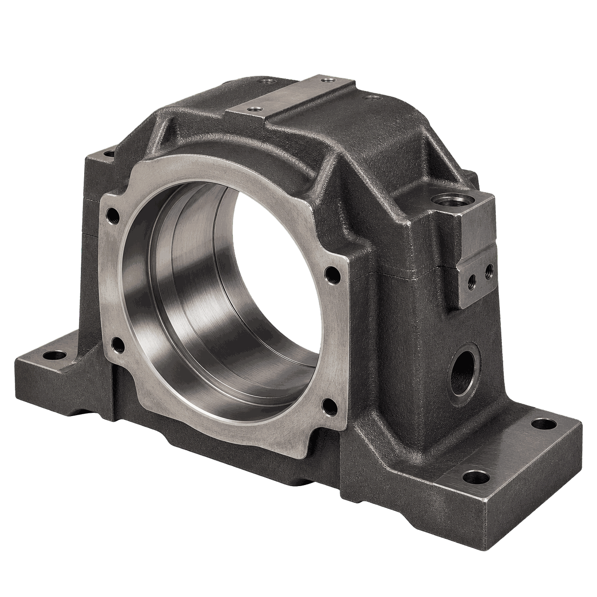
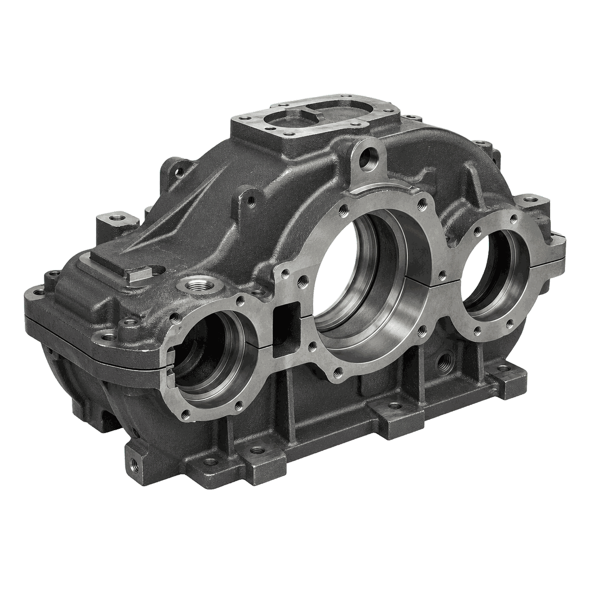
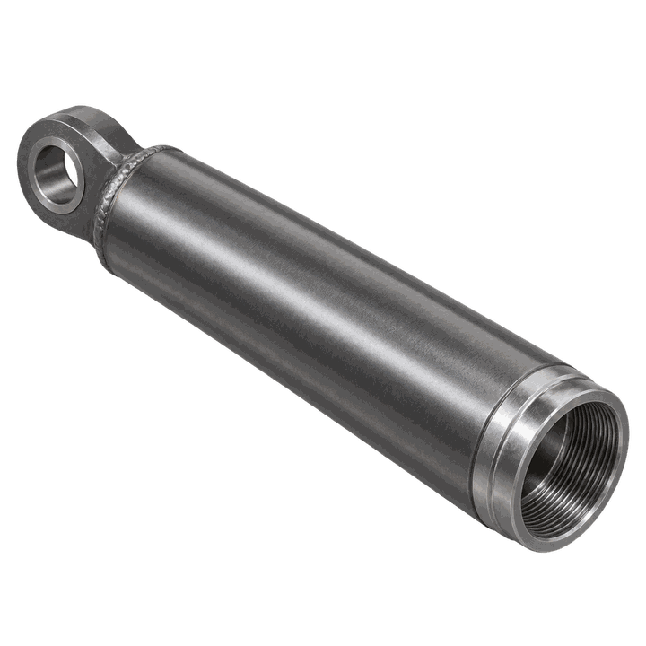
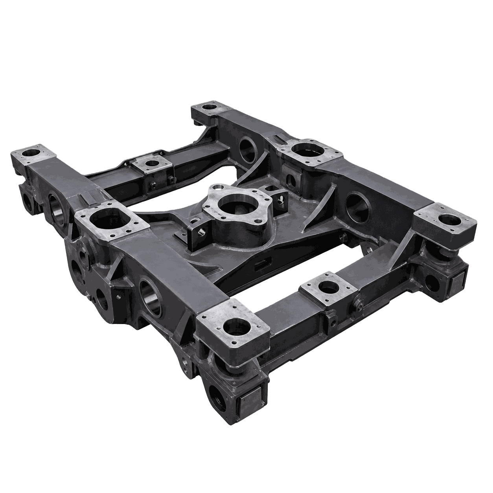
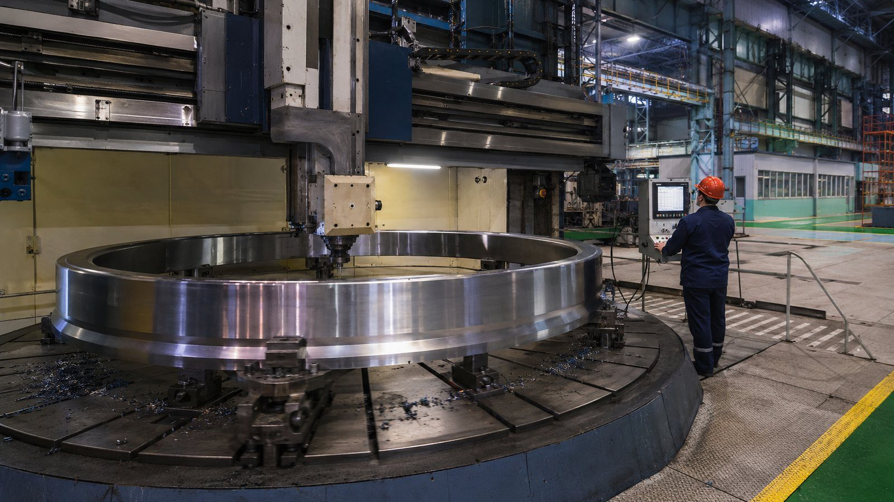
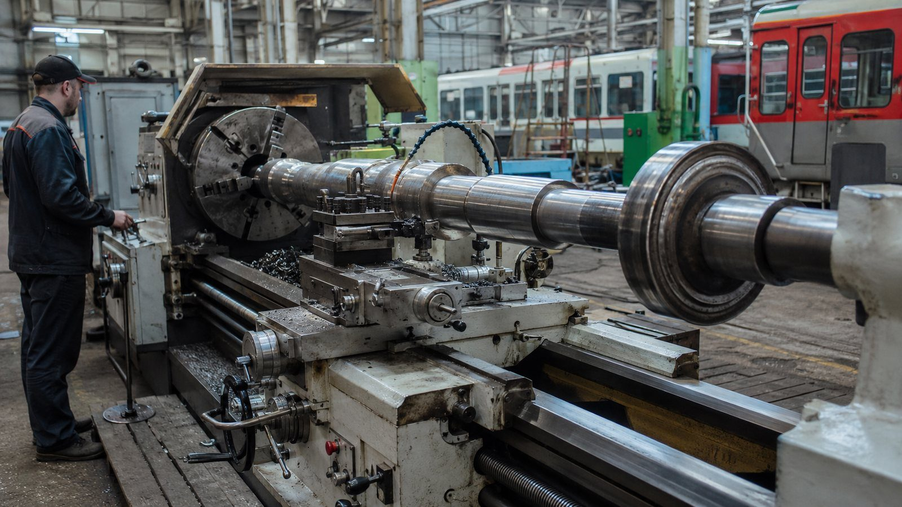
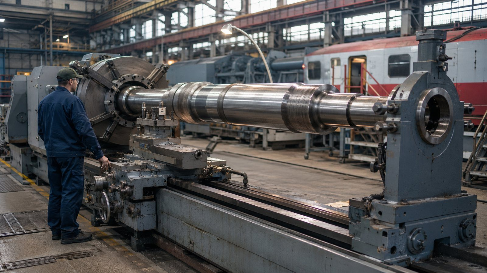

Бандаж колеса
Технологическая задача
Построить маршрут обработки детали «Бандаж колеса» с понятным разделением операций и подбором оборудования под каждую операцию.

Оборудование для деталей ходовой части, буксовых узлов и рамных конструкций, где важны ресурс, повторяемость посадок и обработка крупных заготовок.

Построить маршрут обработки детали «Бандаж колеса» с понятным разделением операций и подбором оборудования под каждую операцию.

Обеспечить соосность шеек, стабильную геометрию детали «Ось колёсной пары» и чистоту рабочих поверхностей.

Обеспечить точность базовых плоскостей, посадочных отверстий и сопрягаемых поверхностей детали «Корпус буксы».

Обеспечить точность базовых плоскостей, посадочных отверстий и сопрягаемых поверхностей детали «Корпус редуктора тележки».

Обеспечить точность базовых плоскостей, посадочных отверстий и сопрягаемых поверхностей детали «Корпус амортизатора».

Сформировать базовые плоскости, контуры и отверстия детали «Рама тележки — узел» без потери геометрии на крупной заготовке.
Реальные запуски оборудования на производствах: что поставили, как вводили в эксплуатацию, что получил заказчик.

Внедрения · 05.08.2026Запуск токарно-карусельного станка CK5116 для обработки деталей железнодорожного транспортаЧитать →
Внедрения · 08.07.2026Токарная обработка крупногабаритных деталей железнодорожного транспорта в ЯрославлеЧитать →
Внедрения · 17.06.2026Токарно-винторезный станок для обработки крупногабаритных деталей локомотивов и вагоновЧитать →Как проходит проект от чертежа до серии — шесть шагов. Нужен участок целиком — комплексное оснащение.
Ходовая часть подвижного состава — это крупные детали с жёсткими требованиями к ресурсу и повторяемости посадок: оси колёсных пар, бандажи и цельнокатаные колёса, корпуса букс, корпуса редукторов и амортизаторов тележек, рамы тележек. Материалы — осевые и колёсные стали, стальное литьё; заготовки — поковки и отливки массой в сотни килограммов. Значительная часть работ выполняется в депо и на ремонтных заводах, где станок должен держать точность на изношенной, нестабильной заготовке.
Механит поставляет станки для вагоностроительных заводов, депо и ремонтных предприятий: технолог подбирает оборудование по чертежу и программе, при необходимости — с тестовой обработкой детали заказчика. Поставка по всей России, пусконаладка на площадке, инструктаж операторов, гарантия от 12 месяцев, выезд инженера за 1–2 рабочих дня — раздел «Сервис». Примеры поставок — в пресс-центре.
Пришлите чертёж и требования — технолог Механита разберёт задачу, составит маршрут обработки и подберёт станок под вашу программу выпуска.
Предварительный анализ — без оплаты.